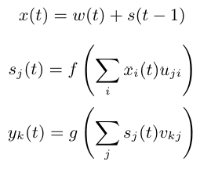

Recurrent Neural Networks#
In this course, we will explore Recurrent Neural Networks (RNNs) to predict the next character. We will use the architecture described in the paper Recurrent neural network based language model, which proposes a simple version of RNN for this task.
The advantage of RNNs is that they do not require a fixed context size, unlike the fully connected network-based models we saw previously.
RNNs keep the context in memory, regardless of the sequence length. This is a cool idea in theory, but we will see at the end of the course that they have their limitations.

Figure extracted from the original paper.
How does an RNN work?#
RNNs operate sequentially: characters are processed one by one. The next character depends on both the current element and the stored state, which contains information from previous characters.
Mathematically, an RNN has three components:
The input \(x\)
The hidden state \(s\)
The output \(y\)
We also add time \(t\) to handle the sequence.
The input at time \(t\) is given by: \(x(t) = w(t) + s(t-1)\) where \(w()\) is the one-hot encoding and \(s(t-1)\) is the previous state.
Then, we calculate the state and the output: \(s(t) = sigmoid(x(t))\) \(y(t) = softmax(s(t))\)
The only parameter to adjust is the size of the hidden layer \(s\).
For initialization, \(s(0)\) can be a small vector.
Practical Implementation#
import torch
import torch.nn as nn
The Dataset#
Generating names with an RNN is not very useful, as names are short and the context is limited. For more interesting tasks, we need a dataset with a broader context.
We therefore use a text file containing Molière’s dialogues. This dataset was created from the complete works available on Gutenberg.org. I cleaned the data to keep only the dialogues.
with open('moliere.txt', 'r', encoding='utf-8') as f:
text = f.read()
print("Nombre de caractères dans le dataset : ", len(text))
Nombre de caractères dans le dataset : 1687290
Since the dataset is large, we only take a portion (for example, the first 50,000 characters) for faster processing.
text=text[:50000]
print("Nombre de caractères dans le dataset : ", len(text))
Nombre de caractères dans le dataset : 50000
Here are the first 250 characters:
print(text[:250])
VALÈRE.
Eh bien, Sabine, quel conseil me donnes-tu?
SABINE.
Vraiment, il y a bien des nouvelles. Mon oncle veut résolûment que ma
cousine épouse Villebrequin, et les affaires sont tellement avancées,
que je crois qu'ils eussent été mariés dès aujo
Here is the number of unique characters:
chars = sorted(list(set(text)))
vocab_size = len(chars)
print(''.join(chars))
print("Nombre de caractères différents : ", vocab_size)
!'(),-.:;?ABCDEFGHIJLMNOPQRSTUVYabcdefghijlmnopqrstuvxyzÇÈÉàâæçèéêîïôùû
Nombre de caractères différents : 73
We create a mapping between characters and integers (and vice versa)
stoi = { ch:i for i,ch in enumerate(chars) }
itos = { i:ch for i,ch in enumerate(chars) }
encode = lambda s: [stoi[c] for c in s] # encode : prend un string et output une liste d'entiers
decode = lambda l: ''.join([itos[i] for i in l]) # decode: prend une liste d'entiers et output un string
We encode the dataset by converting character strings to integers, then to PyTorch tensors.
data = torch.tensor(encode(text), dtype=torch.long)
print(data[:250]) # Les 250 premiers caractères encodé
tensor([32, 12, 22, 59, 28, 16, 8, 0, 0, 16, 41, 1, 35, 42, 38, 46, 6, 1,
29, 34, 35, 42, 46, 38, 6, 1, 49, 53, 38, 44, 1, 36, 47, 46, 51, 38,
42, 44, 1, 45, 38, 1, 37, 47, 46, 46, 38, 51, 7, 52, 53, 11, 0, 0,
29, 12, 13, 20, 24, 16, 8, 0, 0, 32, 50, 34, 42, 45, 38, 46, 52, 6,
1, 42, 44, 1, 56, 1, 34, 1, 35, 42, 38, 46, 1, 37, 38, 51, 1, 46,
47, 53, 54, 38, 44, 44, 38, 51, 8, 1, 23, 47, 46, 1, 47, 46, 36, 44,
38, 1, 54, 38, 53, 52, 1, 50, 66, 51, 47, 44, 72, 45, 38, 46, 52, 1,
49, 53, 38, 1, 45, 34, 0, 36, 47, 53, 51, 42, 46, 38, 1, 66, 48, 47,
53, 51, 38, 1, 32, 42, 44, 44, 38, 35, 50, 38, 49, 53, 42, 46, 6, 1,
38, 52, 1, 44, 38, 51, 1, 34, 39, 39, 34, 42, 50, 38, 51, 1, 51, 47,
46, 52, 1, 52, 38, 44, 44, 38, 45, 38, 46, 52, 1, 34, 54, 34, 46, 36,
66, 38, 51, 6, 0, 49, 53, 38, 1, 43, 38, 1, 36, 50, 47, 42, 51, 1,
49, 53, 3, 42, 44, 51, 1, 38, 53, 51, 51, 38, 46, 52, 1, 66, 52, 66,
1, 45, 34, 50, 42, 66, 51, 1, 37, 65, 51, 1, 34, 53, 43, 47])
We split the data into training and test sets:
n = int(0.9*len(data)) # 90% pour le train et 10% pour le test
train_data = data[:n]
test = data[n:]
Note: At each iteration, we go through the entire dataset sequentially.
Building the Model#
We will now build the model!
As indicated in the paper, the input (the character) is encoded in one-hot, then added to the previous state. We therefore need two fully connected layers:
The first transforms the input \(x(t)\) into state \(s(t)\)
The second transforms \(s(t)\) into prediction \(y(t)\)

Equation taken from the paper. \(f\) is the sigmoid function and \(g\) is the softmax.
Note: The paper is clear and concise, I recommend you read it.
class rnn(nn.Module):
def __init__(self,hidden_dim,vocab_size) -> None:
super(rnn, self).__init__()
self.hidden_to_hidden=nn.Linear(hidden_dim+vocab_size, hidden_dim)
self.hidden_to_output=nn.Linear(hidden_dim, vocab_size)
self.vocab_size=vocab_size
self.hidden_dim=hidden_dim
self.sigmoid=nn.Sigmoid()
# Le réseau prend en entrée le caractère actuel et le state précédent
def forward(self, x,state):
# On one-hot encode le caractère
x = torch.nn.functional.one_hot(x, self.vocab_size).float()
if state is None:
# Si on a pas de state (début de la séquence), on initialise le state avec des petites valeurs aléatoires
state = torch.randn(self.hidden_dim) * 0.1
x = torch.cat((x, state), dim=-1) # Concaténation de x et du state
state = self.sigmoid(self.hidden_to_hidden(x)) # Calcul du nouveau state
output = self.hidden_to_output(state) # Calcul de l'output
# On renvoie l'output et le state pour le prochain pas de temps
return output, state.detach() # detach() pour éviter de propager le gradient dans le state
Training the Model#
Here are the training parameters:
epochs = 10
lr=0.1
hidden_dim=128
model=rnn(hidden_dim,vocab_size)
criterion = torch.nn.CrossEntropyLoss()
optimizer = torch.optim.SGD(model.parameters(), lr=lr)
We now train the model!
for epoch in range(epochs):
state=None
running_loss = 0
n=0
for i in range(len(train_data)-1):
x = train_data[i]
y = train_data[i+1]
optimizer.zero_grad()
y_pred,state = model.forward(x,state)
loss = criterion(y_pred, y)
running_loss += loss.item()
n+=1
loss.backward()
optimizer.step()
print("Epoch: {0} \t Loss: {1:.8f}".format(epoch, running_loss/n))
Epoch: 0 Loss: 2.63949568
Epoch: 1 Loss: 2.16456994
Epoch: 2 Loss: 2.00850788
Epoch: 3 Loss: 1.91673251
Epoch: 4 Loss: 1.84440742
Epoch: 5 Loss: 1.78986003
Epoch: 6 Loss: 1.74923073
Epoch: 7 Loss: 1.71709289
Epoch: 8 Loss: 1.68791167
Epoch: 9 Loss: 1.66215199
We now test the model on the test data:
state=None
running_loss = 0
n=0
for i in range(len(train_data)-1):
with torch.no_grad():
x = train_data[i]
y = train_data[i+1]
y_pred,state = model.forward(x,state)
loss = criterion(y_pred, y)
running_loss += loss.item()
n+=1
print("Loss: {0:.8f}".format(running_loss/n))
Loss: 1.77312289
The loss on the test data is slightly higher than during training. The model has slightly overfitted.
Text Generation#
Now that the model is trained, we can generate text in the style of Molière!
import torch.nn.functional as F
moliere='.'
sequence_length=250
state=None
for i in range(sequence_length):
x = torch.tensor(encode(moliere[-1]), dtype=torch.long).squeeze()
y_pred,state = model.forward(x,state)
probs=F.softmax(torch.squeeze(y_pred), dim=0)
sample=torch.multinomial(probs, 1)
moliere+=itos[sample.item()]
print(moliere)
.
VARDILE.
Vout on est nt, jes l'un ouint; sabhil.
LE DOCTE.
Si vous dicefalassîntes
GIRGIB.
MARGRIILÉ.
LE DOCTE. Jort; et
; bieu,
et je mu tu d'ais d'ai coupce!
SGÉLLÉ.
Il Sgnous elli massit que
Suis pluagil dés.
Cais téscompas: y totte demes
The result is not perfect, but we can recognize a few words and a sentence structure close to the “moliere.txt” file. Not bad for a single-layer RNN!
How to improve the results? Here are some suggestions:
The Limitations of RNNs#
Long at the heart of research in NLP and deep learning, RNNs have several limitations that make them impractical for large models:
Their architecture allows for infinite context in theory, but the sequential structure complicates information propagation over long sequences.
The vanishing gradient on long sequences is a real problem.
The sequential structure makes parallelization difficult, while GPUs are optimized for parallel computations. Training is therefore slower.
The fixed structure is not always suitable for capturing complex relationships.
Since the advent of transformers, RNNs are used less and less.